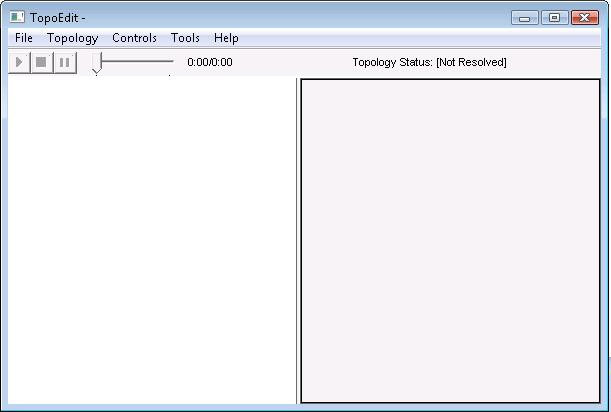

description: TopoEdit Main Window
ms.assetid: 665f347b-18e0-4d10-9e23-94af4c0d8972
title: TopoEdit Main Window
ms.topic: article
ms.date: 05/31/2018
TopoEdit Main Window
After launching TopoEdit, the window shown in the following screen shot appears.

The TopoEdit main window elements are:
- Topology Pane. Appears on the left of the window. This area is used to add topology nodes, view a topology, and connect the topology nodes. For information about using this pane, see Building Topologies by Using TopoEdit.
- Attributes Pane. Appears on the right of the window. This pane displays the attributes of the currently selected topology node. For information about the attributes that are shown on this pane, see Viewing Topology Information.
- Menus. See TopoEdit Menus.
- Toolbar. See TopoEdit Toolbar.
Related topics
Introduction to TopoEdit
TopoEdit
Â
Â